Featured on Russian Incubator FRISCO
YOLO
Web based travel destinations discovery platform through gamifications. Integrated IBM Alchemy API to analyze pictures gathered from users’ Instagram account to generate travel destinations based on users’ preferences with Sabre API.
www.emirateshackathon.com
 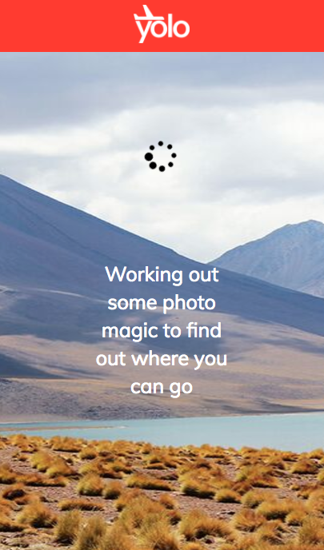
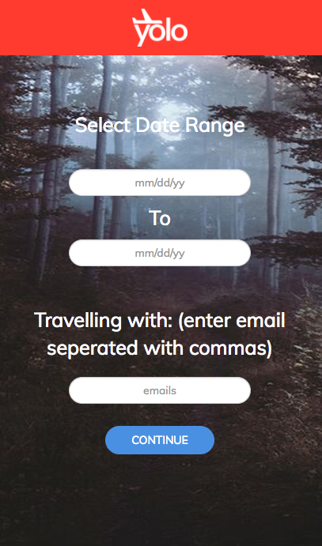
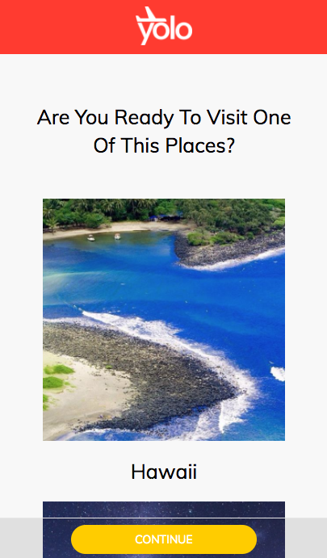
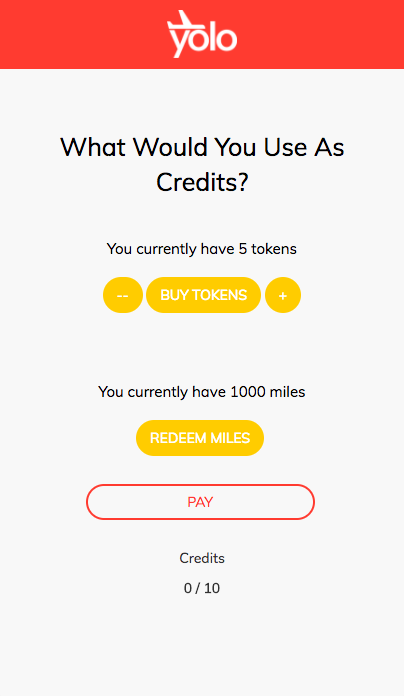
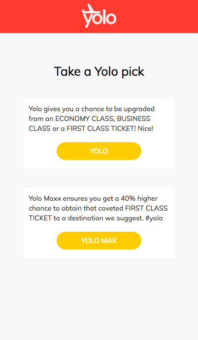
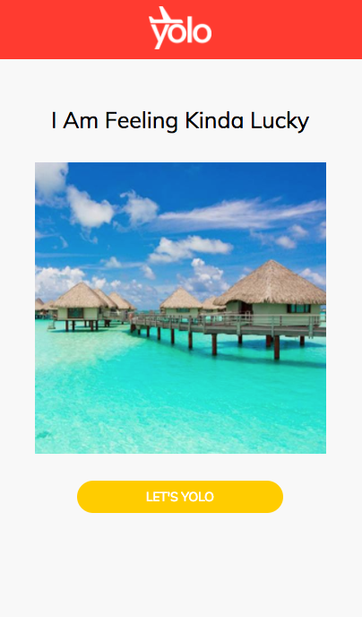
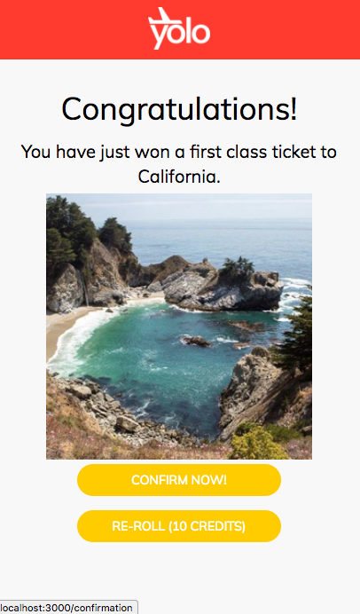
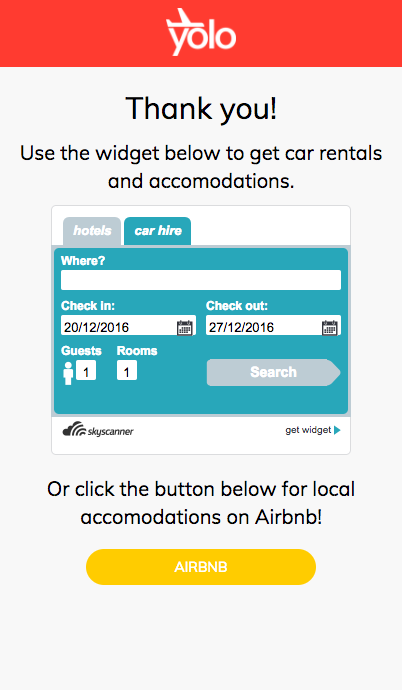
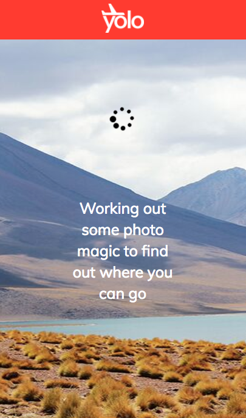
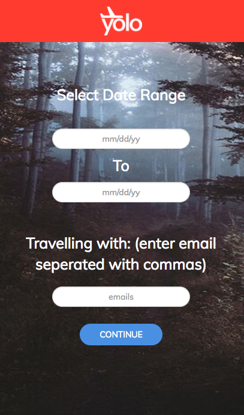
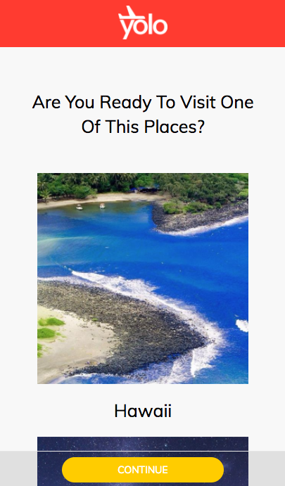
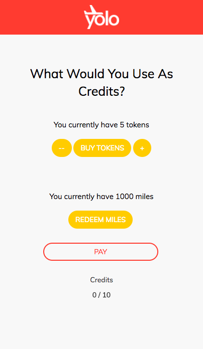
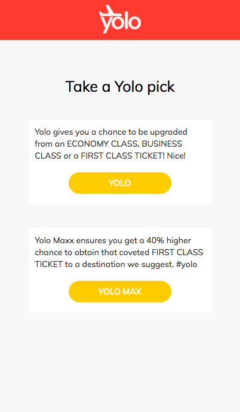
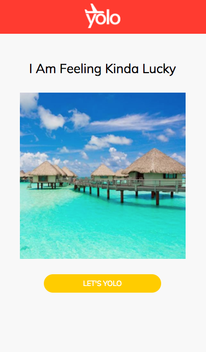
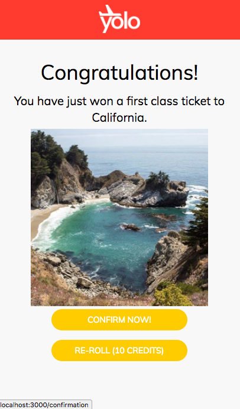
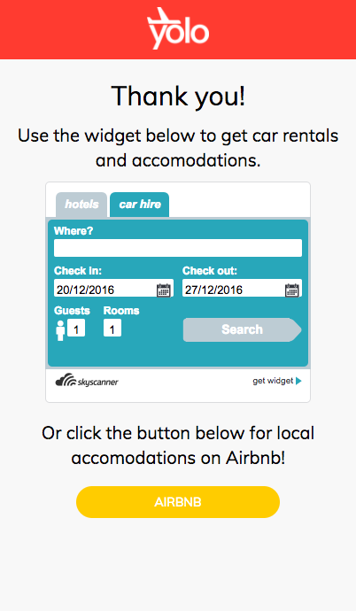